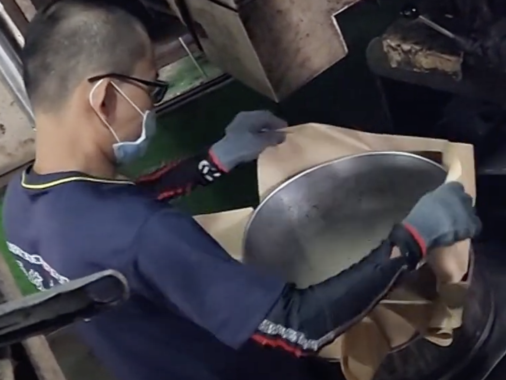

一滴油的旅程
2025年6月10日
嚴選原料
故事的起點，是我們親自挑選的當季新鮮苦茶籽，每一顆都飽含土地的能量。
2025年6月11日 上午 09:00
振篩
透過機器震動與風力，細心篩去雜質與不飽滿的油籽，只留下最菁華的部分。
2025年6月11日 上午 11:30
慢火烘焙
用超過一甲子的經驗控制火侯，以低溫慢炒喚醒油籽最深層的濃郁香氣。
2025年6月11日 下午 13:00
氣冷
剛烘焙好的油籽，以最快的速度吹送冷風降溫，瞬間鎖住迷人的堅果香氣。
2025年6月11日 下午 14:00
粉碎
將冷卻後的油籽碾碎，為下一步的蒸氣穿透做準備，讓每一分精華都能被完整萃取。
2025年6月11日 下午 15:30
氣蒸
以高溫蒸氣均勻加熱粉末，使其軟化並釋放出更多油脂，這是榨出好油的關鍵前奏。
2025年6月11日 下午 16:00

打餅
將蒸過的油籽粉末緊緊壓實，製成一個個厚實的油餅，準備送入壓榨機中，承受粹煉的壓力。
2025年6月12日

古法冷壓
不求快，只求好。我們堅持物理冷壓，耗費更長的時間，只為榨出營養最完整、質地最清澈的第一道初榨油。
2025年6月12日 - 6月26日
靜置沉澱
剛榨出的油，需要超過十天的耐心等待。我們讓時間與重力自然分離雜質，留下最純淨的油質。
2025年6月27日
純淨裝瓶
從油廠出發，這一滴承載著三代人堅持的香醇，正踏上前往您餐桌的旅程。